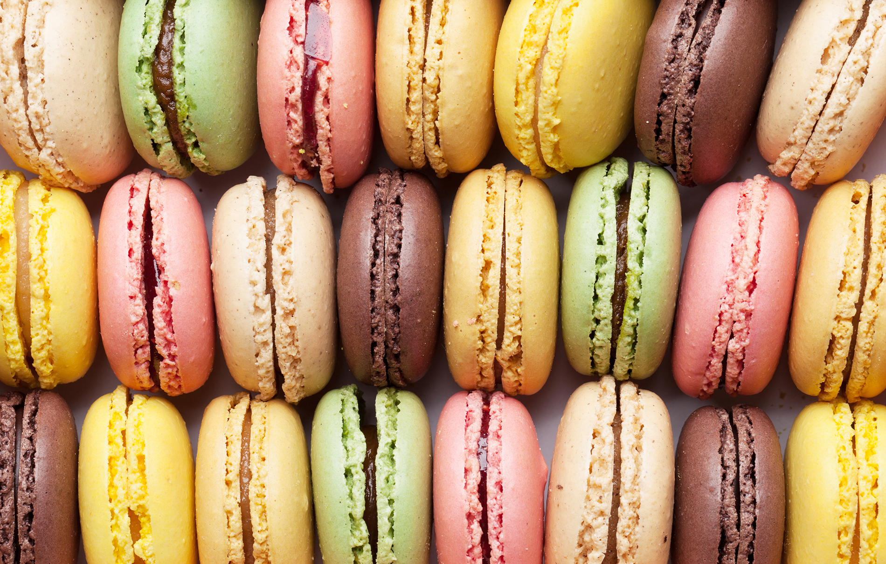

“Quem ainda não se encantou com as cores e sabores do macaron? A iguaria nasceu na Itália,
evoluiu na França e chegou às confeitarias e casamentos do Brasil inteiro.
O que poucos sabem é que esse doce multicolorido tem origem no século XVI, na corte de uma jovem rainha,
e que, apesar de toda nobreza e mistério por traz da receita original,
no início ele era bem mais modesto e discreto que hoje, sendo apenas um simples biscoito.
A FARINHA PERFEITA PARA O MACARON
04/08/2020 às 00:04 - By: Tuane Paixão

Ter sucesso na receita do macaron depende de uma série de fatores.
Apesar de ser uma receita com muito poucos ingredientes,
são muitos detalhes para que o resultado seja o macaron perfeito..
Algumas pessoas utilizam farinhas diversas para fazer os macarons,
como farinha de caju ou mesmo de amendoim. O sabor pode não ficar ruim,
mas o fato é: macarons se faz com farinha de amêndoas.
O sabor da farinha de amêndoas é completamente diferente das outras,
assim como consistência e textura do macaron pronto..
MACARRON: DESEJO & PAIXÃO
04/08/2020 às 00:04 - By: Tuane Paixão
Os macarons, estes pequenos docinhos que conquistaram os brasileiros deixa qualquer apaixonado.
Quem olha pela primeira vez pensa: “Ah é super fácil, tipo um suspiro”.
A receita parece ser simples mesmo, porém derruba qualquer confeiteiro experiente.
O que vou contar agora pode ser redundante, mas realmente é fácil.